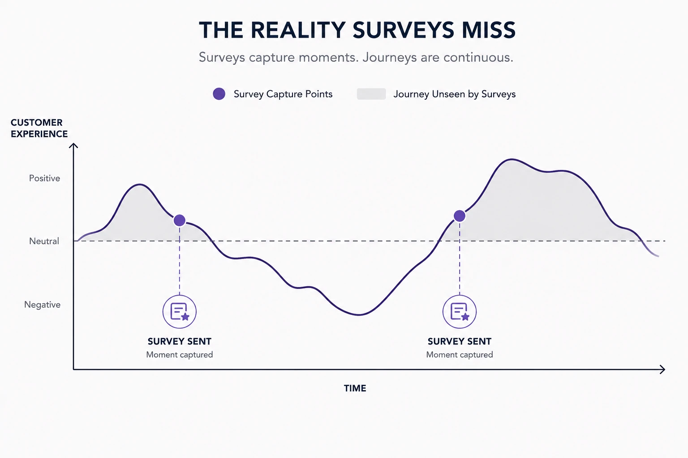

Every quarter, another glowing NPS report lands on the leadership table. Scores are up. CSAT is holding steady in the "excellent" range. Someone even suggests putting the number in the next investor deck.
Then churn ticks up anyway.
If you've sat in that room, you know the confusion that follows. How can customers rate you 9/10 and still leave next month? The uncomfortable answer: NPS and CSAT were never designed to catch that. They're measuring something real — but not the thing that predicts whether someone stays.
01 — The core problem
Surveys Measure Sentiment. Churn Is a Systems Problem.
NPS and CSAT capture how someone feels at a single moment — usually right after a transaction, a support interaction, or a prompted in-app nudge. That's useful data. But it's a snapshot, not a map.
Customer journeys aren't single moments. They're sequences — onboarding, first value, renewal friction, support escalations, feature adoption gaps — dozens of handoffs between systems, teams, and touchpoints. A customer can rate a single interaction a 9 and still be quietly accumulating friction everywhere the survey never asked about.
NPS is the front door. Churn happens in the walls.
02 - The blind spots
What Surveys Can't See

1. Survey timing is narrow — but journeys aren't.
Most CSAT triggers fire post-purchase or post-ticket-close. That's a fraction of the full journey. The friction that actually drives someone to leave often happens between those moments — in the silence of a confusing onboarding flow, a feature they gave up trying to find, a renewal process nobody explained clearly.
2. Sentiment is gameable — structure isn't.
Support agents know how to ask for a good rating at the right moment. Timing gets cherry-picked. None of that changes whether the underlying process is actually sound. You can inflate a score. You can't inflate whether a customer successfully completed the task they came to do
3. Silent switching doesn't show up in a scorecard.
A lot of churn isn't dramatic. It's not an angry cancellation email — it's a customer who quietly stops logging in, then doesn't renew. There's no survey trigger for "quietly gave up." By the time churn data reflects it, the decision was made weeks earlier, somewhere in the journey nobody was watching.
4. One good moment doesn't offset an unresolved structural flaw.
A customer can have a great support interaction and rate it a 10 — and still be stuck in a broken workflow three steps later that never gets surfaced anywhere. Sentiment about one touchpoint tells you nothing about whether the path actually works end to end.
03 - The Shift
What to Look at Instead
If NPS and CSAT are smoke alarms — useful for telling you that something might be wrong — you need a blueprint that tells you where. That means shifting from sentiment metrics to structural ones:
- Path completion rates — Are customers actually finishing the journeys that matter (onboarding, activation, renewal), not just rating them afterward?
- Friction accumulation — Where do drop-offs cluster, even if no single step looks "bad"in isolation?
- Time-to-value — How long does it actually take a customer to get to the outcome they bought your product for?
- Silent disengagement signals — Usage decay, feature abandonment, support ticket patterns that precede cancellation, not just satisfaction after it.
None of these show up on a quarterly NPS dashboard. They show up when you map the journey as a system — where flows are supposed to go, where they actually go, and where the gapbetween the two is quietly costing you customers.
04 - The real question
Not "how happy are they?"
It's "does the path actually work?"
A customer journey with structural flaws will keep producing churn no matter how many satisfied responses you collect along the way — because sentiment metrics measure moments, and churn is decided by the sum of the whole path.
If your NPS looks great and your churn doesn't match it, that's not a contradiction. It's a signal you're measuring the wrong layer.